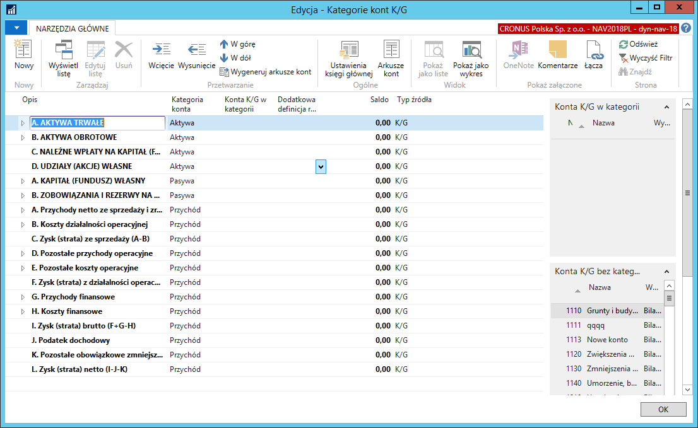
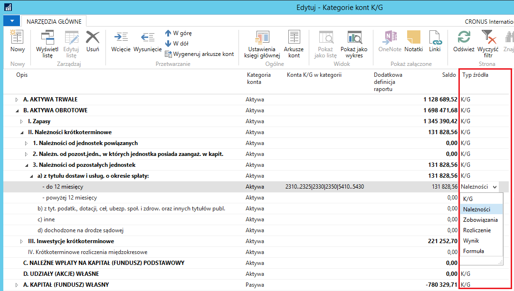

Kategorie kont
Nowe Kategorie kont stanowiące odwzorowanie pozycji bilansu oraz rachunku zysków i strat (w wersji porównawczej) generowane są automatycznie podczas tworzenia nowej firmy w Microsoft Dynamics 365 Business Central. Można również wymusić ich utworzenie uruchamiając Codeunit 52063168 (spowoduje to usunięcie wszystkich powiązań kont księgi głównej z kategoriami). Zastępuje on całkowicie dotychczasowe, standardowe kategorie kont.
Pozycje bilansu w oknie Kategorie kont K/G odzwierciedlone są z opcją Aktywa lub Pasywa w polu Kategorii konta, natomiast pozycje rachunku zysków i strat -- z opcją Przychód

W oknie Kategorie kont K/G zostało dodane pole Typ źródła, za pomocą którego można zmienić standardowy sposób liczenia salda dla danej kategorii lub podkategorii. W polu dostępne są opcje:
K/G -- kalkulacja salda zgodna ze standardem Microsoft Dynamics 365 Business Central;
Należności lub Zobowiązania -- umożliwia pobranie salda należności lub salda zobowiązań (z ksiąg pomocniczych nabywców i dostawców) powiązanego z kontami księgi głównej przyporządkowanymi do danej kategorii lub podkategorii. Konto przypisane do takiej podkategorii musi mieć przypisaną przeciwstawną podkategorię konta (szczegóły w podrozdziale Bilans);
Rozliczenie -- umożliwia umieszczenie salda konta księgi głównej w pozycji aktywów lub pasywów bilansu, w zależności od tego, czy saldo konta K/G jest dodatnie, czy ujemne. Konto przypisane do takiej podkategorii musi mieć przypisaną przeciwstawną podkategorię konta (szczegóły w podrozdziale 1.11.2 Bilans).
Uwaga
W sytuacji, gdy do danej podkategorii będzie przypisane więcej niż jedno konto K/G, saldo każdego z nich będzie rozpatrywane oddzielnie.
Wynik -- umożliwia umieszczenie salda konta K/G w pozycji przychodów lub kosztów rachunku zysków i strat, w zależności od tego, czy saldo konta K/G jest dodatnie, czy ujemne. Konto przypisane do takiej podkategorii musi mieć przypisaną przeciwstawną podkategorię konta (szczegóły w podrozdziale 1.11.3 Rachunek zysków i strat).
Uwaga
W sytuacji, gdy do danej podkategorii będzie przypisane więcej niż jedno konto K/G, rozpatrywana będzie suma sald wszystkich przypisanych kont K/G.
Formuła -- umożliwia ręczne przypisanie wybranych kont K/G do danej podkategorii, pomimo że dane konto zostało już przypisane do innej podkategorii. Przydatne do ustawienia pozycji rachunku zysków i strat „w tym" (szczegóły w podrozdziale 1.11.3 Rachunek zysków i strat).

Uwaga
Dla podkategorii z Typem źródła innym niż K/G lub Formuła zablokowana jest możliwość edycji pola Konta K/G w kategorii. Konfigurację dla takich podkategorii należy przeprowadzić z poziomu kartoteki konta K/G.
Zmianą w stosunku do standardowej funkcjonalności Kategorii kont K/G jest możliwość dowolnej manipulacji kolejnością pozycji. Do tej pory zmiana kolejności mogła się odbywać wyłącznie w ramach tego samego typu kategorii (Aktywa, Pasywa, Przychód itp.). Rozszerzenie umożliwia pełne zarządzanie kolejnością -- np. dzieckiem kategorii o typie Przychód może być kategoria o typie Aktywa lub Pasywa.